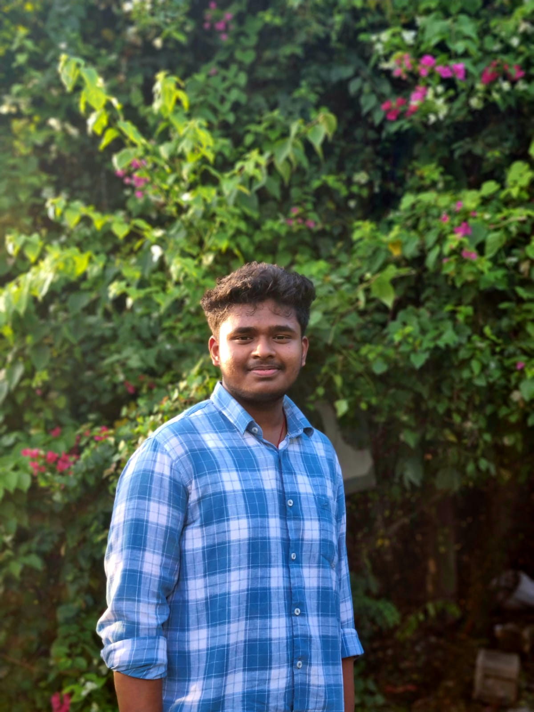

I am based in Kattankulathur, in the Chengalpattu district of Tamil Nadu, and currently
pursuing a B.Tech in Computer Science and Big Data Analytics at SRM Institute of Science
and Technology, Chennai, with a current CGPA of 9.08.
My academic journey began in Andhra Pradesh, where I completed my Intermediate education
at SASI Institute of Technology, Tadepalligudem, securing 91.2%. I completed my schooling
at Sri Chaitanya School with a score of 74.6% in Class 10.
My work combines Python, Java, C/C++, Excel, Jupyter Notebook, and interactive web
development, with a strong focus on data science, analytics, and AI-assisted solutions.
I enjoy building projects that are clean, modern, and easy to understand at first glance,
while balancing functionality with thoughtful design.

SVProfile
Pati Venkata Sai Surya
B.Tech CSE student focused on Big Data Analytics, visual storytelling, and web apps.
Download ResumeAbout Me
Pati Venkata Sai Surya
B.Tech CSE, Big Data Analytics | Data Analytics | Web Development
Data analytics, web development, and AI-assisted solutions.
Computer Science undergraduate specializing in Big Data Analytics at SRM Institute of Science and Technology. I build interactive web tools, explore data with Python, and turn complex information into clear visuals and practical insight.
About
Passionate About Technology & Innovation
Hard skills
Soft skills
Interest areas
Projects
Case studies with visual previews and real links.
Smart DSA Visualizer
AI-based interactive learning system for data structures and algorithms.
- Visualizes sorting, searching, trees, and graph algorithms
- Uses step-by-step animations to improve understanding
- Deployed online with learning resources for study
EDA on Employment Data
Exploratory analysis of employment-to-population data using Python and visualization.
- Used NumPy, Pandas, Matplotlib, and Jupyter Notebook
- Cleaned UN data to pull out actionable insights
- Highlighted gender-based employment trends and disparities
Vibe Coding
AI-assisted web development project focused on fast iteration and responsive UI.
- Designed the experience using prompts and AI coding tools
- Refined structure and UX for performance and clarity
- Used GitHub Copilot and Cursor for rapid development
Experience
Campus roles and involvement.
Volunteer
SRM Institute of Science and Technology, Directorate of Student Affairs.
Student Member
Directorate of Alumni Affairs, helping with communication and coordination.
ISTE Member
Student member with a focus on professional development and technical growth.
Hackathon Builder
Active participant in technical events, challenges, and team-based innovation.
Education
Academic path.
Class 10
Sri Chaitanya School, 74.6%.
Intermediate
SASI Institute of Technology, Tadepalligudem, Andhra Pradesh, 91.2%.
B.Tech
Computer Science and Big Data Analytics, SRM Institute of Science and Technology, Chennai, CGPA 9.08.
Achievements
Competitions and interests.
Technical event finalist
Finalist and participant across multiple hackathons and student technology events.
Creative side
Reading narrative stories, traveling, photography, volunteering, language learning, and puzzles. More files and extra material are available in my Drive folder.
Connect online
LinkedIn, GitHub, emails, phone number, and project files are all easy to find throughout the portfolio.
Open Drive folderContact
Message me for data analytics, BI, and creative web work.
Message: I’m open to projects and collaborative opportunities.
Personal Email: saisuryapati@gmail.com
SRM Email: pp5488@srmist.edu.in
Phone: +91 94909 423189
LinkedIn: pati-saisurya-b9059b32b
GitHub: saisurya-2406